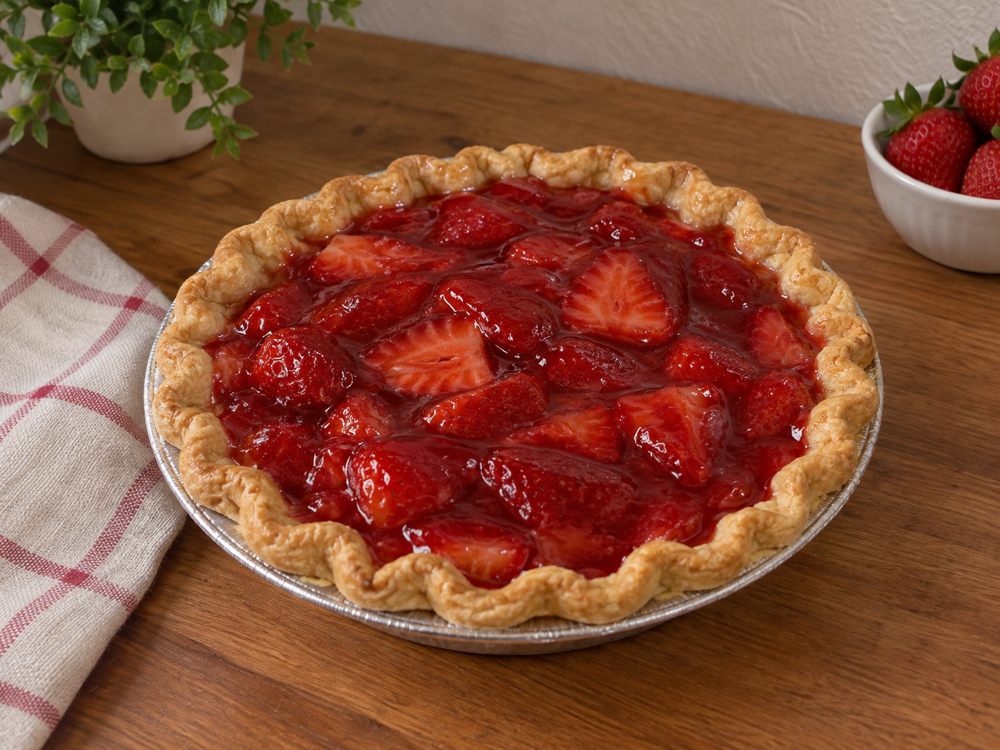

¡Bienvenidos a Dulce Hogar!
En Dulce Hogar creemos que los mejores recuerdos también se disfrutan en un postre. Elaboramos cada receta con dedicación y ese toque casero que evoca los sabores de la infancia y la calidez del hogar.
Desde nuestros clásicos pasteles hasta nuestras galletas artesanales, cada creación es una invitación a saborear momentos especiales. Descubre nuestra variedad de postres y déjate llevar por la dulzura que solo Dulce Hogar puede ofrecer.
